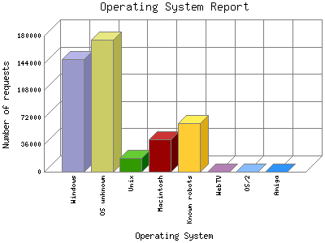

Analog 5.24
Analog 5.24 Report Magic for Analog 2.13
Report Magic for Analog 2.13The Operating System Report lists the operating system your visitors are running for visitors whose browser types you know. Not all browsers provide this information and not all visitors provide browser information, but what is provided, is summarized here.
This report is sorted by number of requests.

| Operating System | Number of requests | |
|---|---|---|
| 1. | Windows | 148,624 |
| Unknown Windows | 91,337 | |
| Windows XP | 48,989 | |
| Windows NT | 2,375 | |
| Windows 95 | 933 | |
| Windows ME | 617 | |
| Windows 2000 | 3,561 | |
| Windows CE | 133 | |
| Windows 3.1 | 124 | |
| Windows 98 | 551 | |
| Windows 32-bit | 4 | |
| 2. | OS unknown | 174,984 |
| 3. | Unix | 18,733 |
| Linux | 18,361 | |
| Other Unix | 346 | |
| IRIX | 2 | |
| BSD | 24 | |
| 4. | Macintosh | 43,005 |
| Unknown Macintosh | 41,480 | |
| Macintosh 68k | 26 | |
| Macintosh PowerPC | 1,499 | |
| 5. | Known robots | 64,345 |
| 6. | WebTV | 1 |
| 7. | OS/2 | 1 |
| 8. | Amiga | 1 |
This report was generated on April 3, 2016 02:21.
Report time frame August 14, 2011 05:21 to April 3, 2016 04:37.
| Web statistics report produced by: | |
| Analog 5.24 | Report Magic for Analog 2.13 |